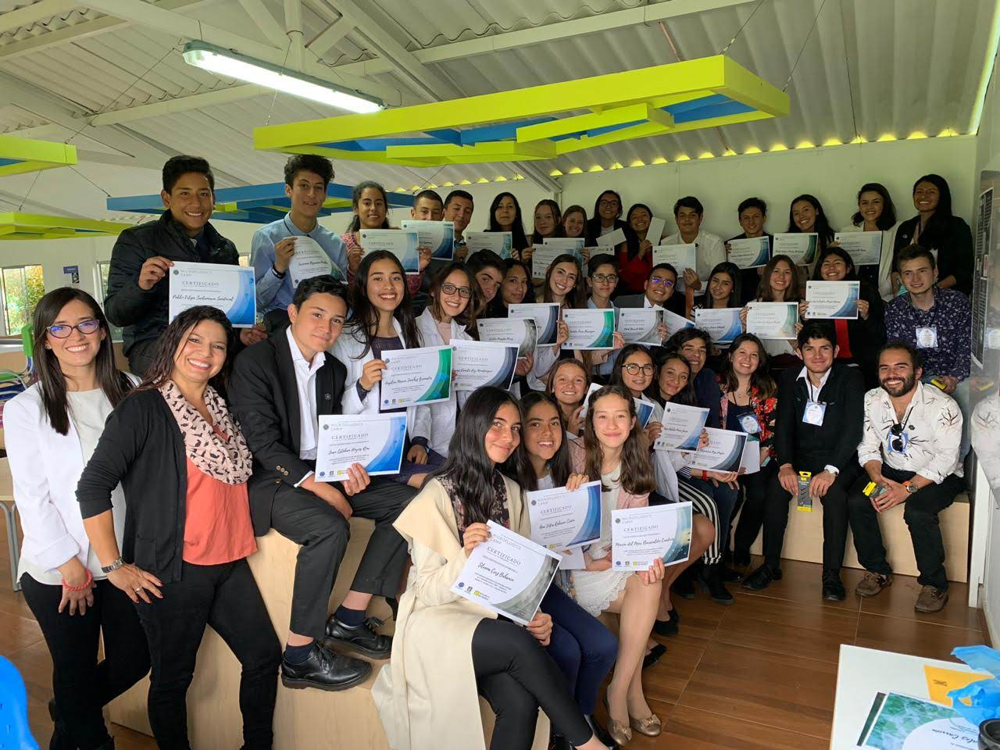

Science Education and Outreach
I've had the chance to work togehter with a group of researchers from diverse backgrounds, academic levels and places around the world collaborating to understand the Physics of Aging.
Mentees

Jeimy A. Capera Mendivelso
Role: Undergraduate Research Intern, UniAndes, 2024Project: Machine Learning Methods for Identifying States in Aging Yeast.
Outcome: Poster presentation at ASCB Cell-Bio 2024 in San Diego
Training: B.Sc. in Physics, Universidad Distrital
Currently:currently applying to PhD programs.
More about Jeimy: Bachelor in Physics from Universidad Distrital Francisco José de Caldas with experience in Python programming and machine learning techniques. Areas of interest include research in cellular biophysics, computational analysis of biological data, and physical modeling applied to living systems.